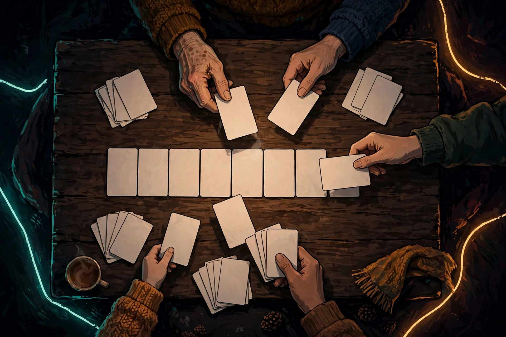

Deck-building games for family night: start small, end with Dominion

Deck building sounds like homework that happens before a game starts, the way trading card players assemble a deck at home and bring it to the table ready made. Tabletop deck builders do the opposite. The building is the game. The Family Gamers put the loop in one sentence: play cards, accumulate currency, buy better cards that let you do more things. Everyone starts with the same weak little deck, and the deck each player ends with is the record of the choices they made along the way.
That loop hides two ideas a child has to grasp before any of these games click. First, a card bought this turn goes to the discard pile, not into the hand, so it helps later rather than now. Second, the weak cards a player starts with keep coming back every shuffle, so removing them can matter as much as buying new ones. The five games below form a ladder built around those two ideas. Each rung changes one thing, and the ladder is sorted by the youngest player at the table, because that is the number that decides whether family night works.
The facts box: five games, verified
Players, ages, and times below were checked against publisher rules, publisher announcements, and detailed reviews on November 17, 2026. One conflict is printed rather than smoothed over, because it sits on the youngest rung of the ladder.
| Game | Players | Ages | Time | What the deck has to do |
|---|---|---|---|---|
| Abandon All Artichokes | 2 to 4 | 10+ | About 20 min | Shrink until a hand has no artichokes in it |
| Mycelia | 1 to 4 | 9+ | About 45 min | Clear 20 dewdrops off a personal board |
| The Quest for El Dorado | 2 to 4 | 10+ | 30 to 60 min | Move an explorer along a route to the finish |
| Harry Potter: Hogwarts Battle | 2 to 4 | 11+ | About 60 min | Beat the villains together, one school year at a time |
| Dominion (Second Edition) | 2 to 4 | 13+ | About 30 min | Score the most points from a market that changes every game |
The age conflict, stated plainly: GeekDad's review of Abandon All Artichokes lists ages 8 and up, while the Gamewright rules reproduced on Board Game Arena list ages 10 and up for the same box. The table above uses the rules figure. A confident reader younger than ten may well manage the cards, but the printed publisher number is 10 plus, and families deserve the printed number rather than a reviewer's optimism.
Three dated prices, all in US dollars and checked on November 17, 2026: Abandon All Artichokes retails at $12.99, Mycelia carries a suggested retail price of $39.99, and Dominion Second Edition lists at $44.95 direct from Rio Grande Games. Prices move between retailers, so treat those as the reference points they are.
Rung one: Abandon All Artichokes teaches thinning first
Most deck builders bury the lesson about weak cards. Abandon All Artichokes, designed by Emma Larkins and published by Gamewright, makes it the entire game. The box holds 100 cards: 40 artichokes and 60 vegetables, six each of ten kinds. Every player starts with a personal deck of ten artichoke cards, which do nothing at all, and draws a hand of five. Each turn, a player harvests one vegetable card from the Garden Row of five face up cards, plays what can be played, discards, and draws five fresh cards. The first player to draw a hand with no artichokes in it at the end of a turn wins, and says so out loud.
Vegetable cards compost artichokes, swap cards, and pull more cards from the row, so every purchase is really a small act of deck repair. A child learns the genre's least obvious idea, that a smaller deck cycles its good cards faster, by feeling it happen over about twenty minutes. There is no currency to count and no points to total. The deck either works or it does not, and the hand at the end of the turn delivers the verdict.
Rung two: Mycelia gives the deck a board to clear
Mycelia, from Ravensburger and designer Daniel Greiner, keeps the training wheels and adds a picture of progress. It plays 1 to 4 players, ages 9 and up, in about 45 minutes. Each player starts with the same six start cards and a personal board covered with 20 dewdrops. A turn means playing a hand of three cards, collecting leaves, and spending those leaves to hire mushroom hero cards into the deck. Hired heroes move and remove dewdrops, and the first player to clear every dewdrop from their board wins.
The board does quiet teaching work. In a pure card game, a better deck is an abstract claim. Here a child can count what a better deck did, because the dewdrops left on the board shrink as the hired heroes start cycling through the hand. Once the basic heroes feel familiar, the box includes extension hero cards that add stronger and stranger effects, so the same game can stretch a little further before the family moves on.
Rung three: The Quest for El Dorado turns the deck into a race
Reiner Knizia's The Quest for El Dorado, published by Ravensburger, gives buying a destination. It plays 2 to 4 players, ages 10 and up, in about 30 to 60 minutes, with roughly five minutes of setup. Each player starts with eight cards, four Travelers, three Explorers, and one Sailor, and plays a hand of four. Cards move an explorer piece across a modular board of jungle, water, and village spaces, and each turn a player may buy up to one card from the market. Bought cards go to the discard pile, so a card purchased in a hurry still takes time to arrive in a hand.
The race exposes a planning mistake gently. A deck heavy on jungle cards stalls at the water. A deck that buys whatever looks strong, rather than what the route ahead demands, stalls everywhere. Because the board is rebuilt from tiles each game, the right deck changes with the map, and reading the route before spending becomes the skill the game rewards.
Rung four: Hogwarts Battle makes the deck a team project
Harry Potter: Hogwarts Battle, from USAopoly, now The Op, is the cooperative rung. Two to four players, ages 11 and up, play as Harry Potter, Hermione Granger, Ron Weasley, or Neville Longbottom, building decks together to defeat villains across about an hour. The box contains seven game boxes, one for each school year, and each box adds new cards and rules when it is opened. The deck building curriculum is built into the packaging: game one teaches the basics, and later years layer in the complications.
Cooperation changes the table talk. A purchase is no longer a private optimization, because the team can discuss which hero should buy what, and a weak turn hurts a shared position rather than one player's pride. For families whose younger players dislike losing to a parent, that shared deck building is the point of this rung. GeekDad listed the game at a $49.95 retail price when it debuted at Gen Con in 2016, so current prices need a fresh check at the till rather than a number carried forward from its launch year.
Rung five: Dominion, the full market
Dominion started the genre, and the Second Edition from Rio Grande Games is the current box. It holds 500 cards covering 26 Kingdom card types, and each game uses only ten of those types, chosen fresh, so the market on the table is different every time. Two to four players, ages 13 and up, play in about 30 minutes. Everyone starts with seven Coppers and three Estates, draws five cards, and takes turns in three phases: Action, Buy, and Clean up, discarding the hand and drawing five new cards at the end.
Nothing on this rung is hidden behind a theme. The starting Estates score points and do nothing else, so they clog hands exactly the way the artichokes did four rungs earlier, and now the player has to weigh buying points against buying power with every purchase. The First Edition is out of print at the publisher, which matters for second hand listings: a cheap First Edition box is an older game, not a bargain copy of the current one.
Who will love it, who should skip
Start where the youngest player sits, not where the adults wish the table sat. A family with a nine or ten year old and twenty free minutes belongs on the first two rungs. A family that argues happily about routes and maps belongs on rung three. A family that prefers winning together belongs on rung four, provided the Harry Potter theme lands at home. Dominion waits at the top for tables with teenagers, and it rewards the wait, because every earlier rung has already taught its two big ideas.
Skip the whole ladder if card text is the obstacle. Every game here asks players to read card effects, compare them, and remember what a discard pile will eventually deliver. Families who want the same feeling of a plan coming together, without reading at the table, will have a better night with a route or tile game instead. The ladder will still be there when the reading catches up.
— Rex Bennett, Entertainment Writer